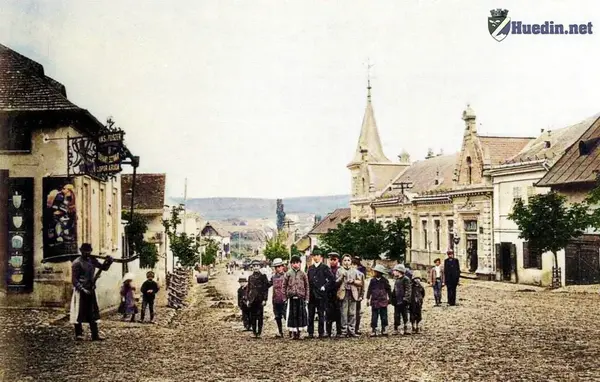
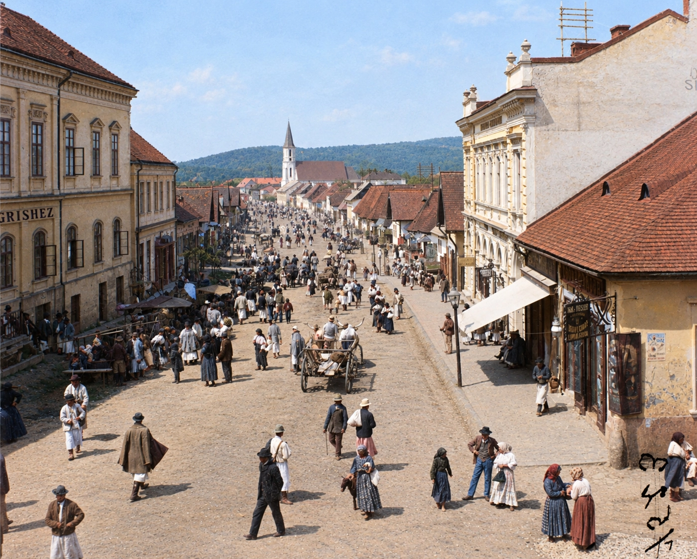
Arhivă fotografică · Huedin
Huedinul de altădată, readus la viață prin culoare
Se spune că cele mai tari descoperiri se fac din întâmplare.
Fotografie din colecția arhivei, colorizată.
Colecția
Perioade istorice
Filtrele existente ale arhivei, păstrate exact ca în versiunea originală.
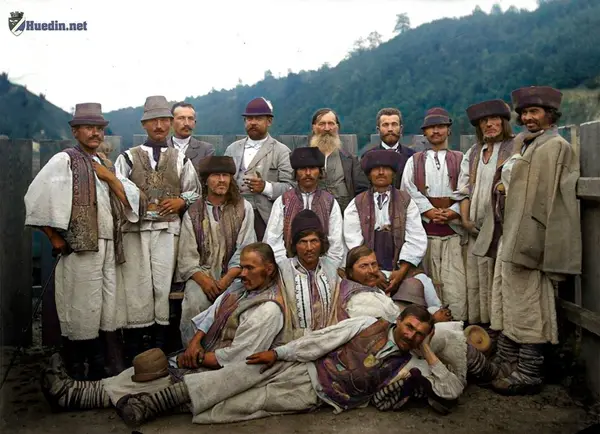
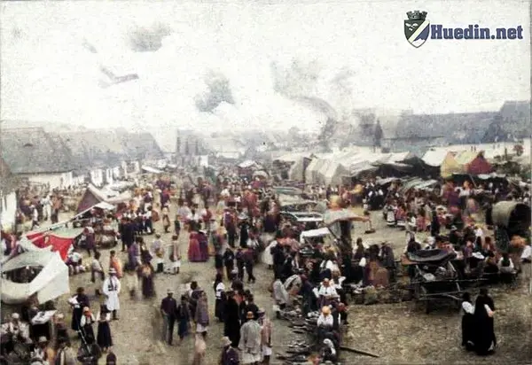
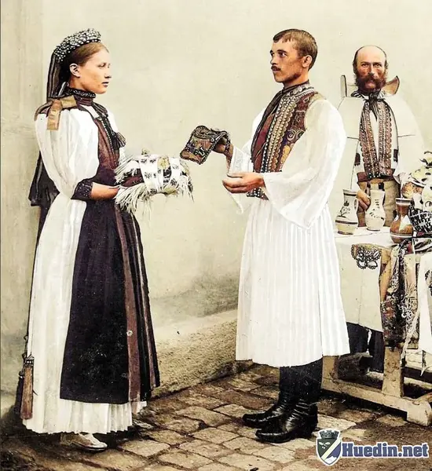
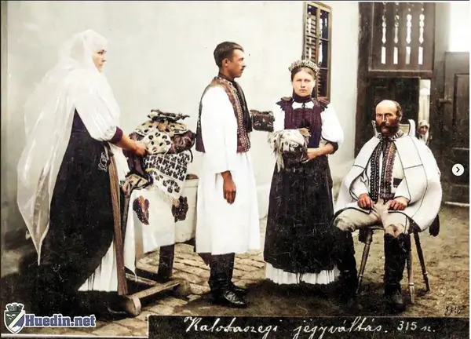
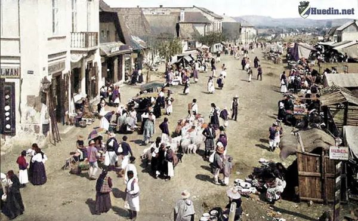
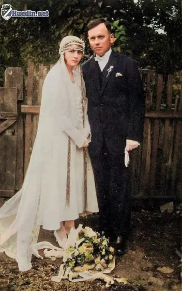
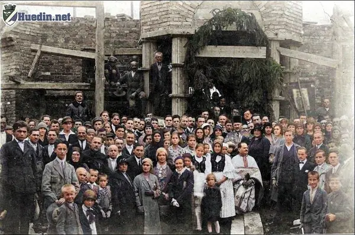
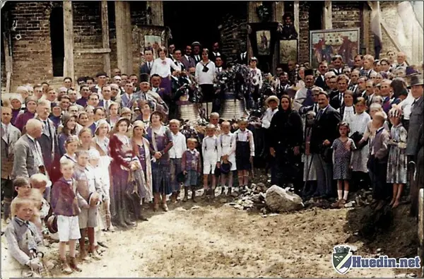
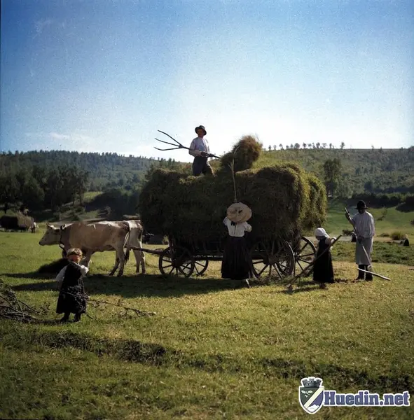
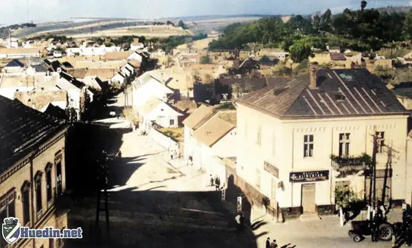
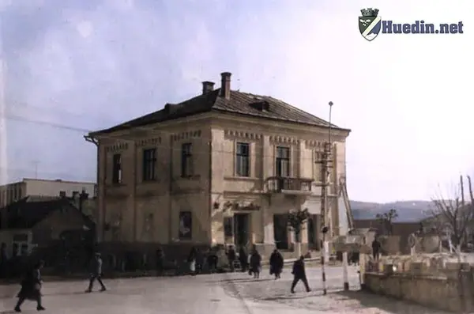
Utile
Date despre Huedin și legături utile
Informațiile publice preluate din versiunea originală a site-ului.
9346
Populația în 2011
61.24
Suprafața (km2)
556
Altitudine medie față de nivelul mării (m)
405400
Cod Poștal
Despre proiect
Huedinul istoric
Se spune că cele mai tari descoperiri se fac din întâmplare. Exact așa am pățit și eu… într-o seară în care probabil trebuia să fac orice altceva mai productiv, am dat peste prima fotografie veche a orașului Huedin.
Și gata… s-a terminat. Am intrat într-o gaură neagră a internetului din care am ieșit după ore întregi, cu ochii obosiți, sufletul plin de nostalgie și un folder nou numit foarte modest: „Poze Huedin”.
Nu pot explica exact senzația pe care am avut-o când am văzut pentru prima dată Huedinul de altădată. A fost un amestec ciudat de fascinație, emoție și acel sentiment că privești direct într-o bucățică de timp înghețată.
Așa s-a născut proiectul personal „Huedinul Istoric” — o încercare de a readuce aceste imagini la viață prin colorizare. Pentru că, sincer… viața e prea frumoasă ca să rămână doar în alb și negru. 😊
Desigur, colorizarea nu este perfectă. Uneori AI-ul decide că un zid trebuie să fie mov sau că cerul arată mai bine ca după apocalipsă. Dar tocmai asta face procesul interesant. De aceea, orice sugestie, idee sau critică constructivă este mai mult decât binevenită!
Disclaimer
- Documentarea s-a realizat în principal prin cercetări online, cu sprijinul dlui profesor Horea-Dorin Matiș, căruia îi mulțumesc pentru informațiile oferite;
- Pozele originale sunt alb-negru, în format digital;
- Sursele imaginilor includ rețele sociale (Facebook, Instagram, Twitter etc.), arhive digitale online și alte colecții publice;
- Colorizarea a fost realizată atât manual (Photoshop), cât și cu ajutorul unor programe bazate pe inteligență artificială.
Contact
Scrieți-ne
Orice sugestie, corectură sau informație suplimentară despre fotografii este binevenită.
Adresă
Piața Republicii
admin@huedin.net
Telefon
07XXXXXXXX
Hartă
Locațiile documentate din arhivă.